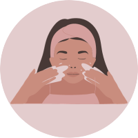
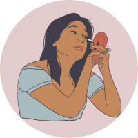
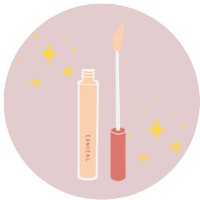
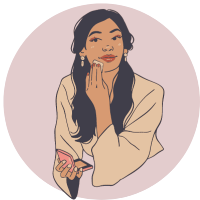
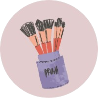

Prepare a Pele
Antes de aplicar o corretivo, é importante começar com a pele limpa e hidratada. Certifique-se de ter lavado o rosto e aplicado seu hidratante facial regular. Deixe o hidratante ser absorvido pela pele antes de prosseguir.

Escolha a Cor Certa
Escolha um corretivo que seja da mesma tonalidade da sua base ou um tom ligeiramente mais claro. Isso ajudará a corrigir as imperfeições sem destacar a área.
Olhe atentamente para o seu rosto e identifique as áreas que precisam de correção. Isso pode incluir manchas, olheiras, espinhas ou qualquer outra imperfeição.
Aplique o Corretivo
Use um pincel de corretivo ou seus dedos para aplicar o corretivo nas áreas que você identificou. Aplique o produto em pequenos pontos ou traços, em vez de grandes quantidades, para garantir uma aplicação uniforme.

Dê Batidinhas para Espalhar
Com a ponta dos dedos ou um pincel macio, dê batidinhas suaves na área onde aplicou o corretivo. Isso ajuda a misturar o produto à sua pele de forma natural. Evite esfregar para não irritar a pele.

Ajuste a Quantidade
Adicione mais corretivo, se necessário, mas evite aplicar uma quantidade excessiva.
Defina com Pó Translúcido
Para evitar que o corretivo acumule em linhas finas e rugas, defina a área com um pouco de pó translúcido. Isso ajudará a manter o corretivo no lugar ao longo do dia.

Termine a Maquiagem
Continue com sua rotina de maquiagem regular. Se você usar base, aplique-a após o corretivo para obter um visual uniforme.
Lembre-se, a chave para uma aplicação de corretivo eficaz é a moderação. Comece com uma pequena quantidade de produto e vá construindo conforme necessário. Isso garantirá uma correção natural e suave.
Prepare a Pele:
Certifique-se de que sua pele esteja limpa e hidratada. Se você já aplicou a base e o corretivo, o blush deve ser a próxima etapa.
Escolha a Cor Certa:
Escolha um tom de blush que complemente o tom natural das suas bochechas quando você sorri. Tons rosados, pêssego e terracota são opções populares, mas a escolha da cor depende do seu tom de pele e da aparência desejada.
Escolha a Textura do Blush:
Existem diferentes texturas de blush, como em pó, creme e líquido. Escolha a textura que melhor se adapta ao seu tipo de pele e preferência pessoal.
Escolha o Pincel Adequado:
Use um pincel de blush de boa qualidade. Pincéis com cerdas macias e arredondadas são ideais para uma aplicação suave e difusa.
Dê Batidinhas no Pincel:
Toque levemente o pincel no blush, removendo qualquer excesso. É mais fácil adicionar mais blush se necessário do que corrigir uma aplicação excessiva.
Sorria e Aplique nas Maçãs do Rosto:
Sorria para destacar as maçãs do rosto. Aplique o blush com movimentos suaves, começando do meio da bochecha em direção às têmporas. Evite trazer o blush muito para baixo ou muito próximo ao nariz.
Misture Bem:
Com movimentos leves e circulares, misture o blush na pele para evitar linhas demarcadas. Isso criará um acabamento mais natural.
Ajuste a Intensidade:
Adicione mais blush conforme necessário para alcançar a intensidade desejada. Lembre-se, é melhor construir a cor gradualmente.
Defina com Pó Translúcido (Opcional):
Se quiser garantir que o blush dure mais tempo, você pode definir a área com um pouco de pó translúcido.
Verifique no Espelho:
Dê um passo para trás e avalie o resultado no espelho para garantir que a aplicação esteja equilibrada em ambos os lados do rosto.
Contorno
Prepare a Pele:
Certifique-se de que sua pele está limpa e hidratada. Se você já aplicou a base, corretivo e blush, o contorno deve ser a próxima etapa.
Escolha os Produtos Certos:
Escolha um produto de contorno que seja de dois tons mais escuros que a sua base. Pode ser em creme, pó ou bastão, dependendo da sua preferência.
Escolha os Pincéis Adequados:
Você precisará de um pincel para contorno (um pincel de contorno angular funciona bem) e um pincel para misturar.
Identifique as Áreas para Contornar:
Identifique as áreas do rosto que você deseja esculpir. Isso geralmente inclui as laterais do nariz, abaixo das maçãs do rosto, ao longo da linha do maxilar e na linha do cabelo na testa.
Aplique o Contorno:
Com o pincel de contorno, aplique o produto nas áreas identificadas. Evite aplicar muito produto de uma vez e lembre-se de que é mais fácil adicionar mais contorno do que corrigir um excesso.

Misture Bem:
Use o pincel de mistura para esfumar o contorno de maneira suave e uniforme. Isso evita linhas demarcadas e cria uma aparência mais natural.
Contorne o Nariz (Opcional):
Se desejar afinar o nariz, aplique uma linha fina de contorno nas laterais do nariz e, em seguida, misture bem.
Ilumine (Opcional):
Para acentuar ainda mais as áreas esculpidas, você pode aplicar um iluminador nas áreas que deseja destacar, como o topo das maçãs do rosto, ponte do nariz, arco das sobrancelhas e centro da testa.
Defina com Pó Translúcido (Opcional):
Se desejar, você pode definir as áreas contornadas com um pouco de pó translúcido para garantir que o produto permaneça no lugar ao longo do dia.
Lembre-se, a chave para um contorno eficaz é a moderação. Comece com uma quantidade pequena de produto e vá construindo conforme necessário para evitar um visual muito dramático.